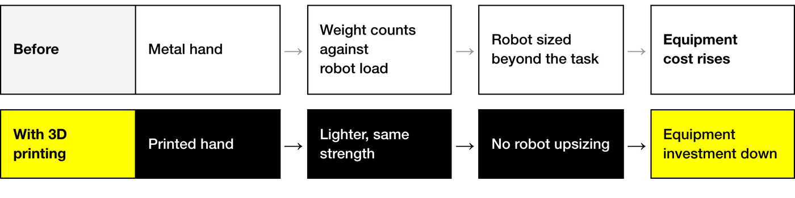

News & Insights

part cost down 67%, lead time from 14 days to 1
The customer story also notes that the original metal hands were heavy enough to require oversized robot configurations. With lighter printed hands, Kojima no longer needed oversized robots, and overall equipment investment came down significantly.
Background
An 88-year-old auto parts maker automates a manual seal-attachment step
Kojima, now in its 88th year, has more than 8,000 employees across its group companies and operations in Japan, the United States, Thailand, China and Europe. It designs and produces automotive interior, engine and exterior components, and uses its group supply chain to offer one-stop service from development through high-volume production.
Electrification and system integration are reshaping the automotive industry, and globalization has sharpened competition among parts suppliers. Kojima works to the QCD principle—Quality, Cost, Delivery—in pursuit of manufacturing that is more precise, faster and less expensive.
One production step required operators to attach non-woven fabric seals by hand. As the number of seals increased, so did the labor hours. To improve efficiency and reduce labor requirements, Kojima turned to robotic automation.


The problem
Heavy metal hands required oversized robots
The robot hands on the automation equipment were originally made of metal. A robot hand sits at the end of the arm, and its weight counts directly against the load the robot has to carry.
The weight of the metal hands required robot configurations larger than the task itself called for, which raised overall equipment cost significantly. A robot's payload rating has to cover both the hand and the workpiece, so a heavier hand pushes the selection toward a higher payload class.

The approach
Robot hands printed in-house on Markforged
Kojima adopted Markforged 3D printers (the customer story lists the Mark Two and the X7) to produce its robot hands.
According to the customer story, switching from metal to 3D-printed components cut the weight of the robot hands significantly while keeping the strength required for production use. The robots no longer needed oversized configurations, and equipment investment came down.
The story also shows several printed parts in use on the line: a cylinder joint that lets a cylinder adjust the angle of a jig base, a fixture that locates and holds the product during the process, and a stand that stores rolls of seal stickers.


Results
Part cost down 67%, lead time from 14 days to 1
Cost. The 3D-printed robot hand components cost 67% less to produce than conventionally machined parts.
Lead time. The customer story compares 14 days for outsourced part production with 1 day for printing in-house on Markforged. Against outsourced machined parts, both cost and lead time came down sharply.
Design work. Outsourced machining required detailed 2D drawings before an order could be placed; 3D printing starts directly from 3D CAD data. Depending on the part, design labor fell by approximately 30%.
Quality. According to the customer story, the printed hands kept the strength required for production use after the weight reduction.
Takeaway
Check hand weight before specifying the robot
The printed parts in this case are all production tools used on the line: robot hands, fixtures and storage stands. Parts of this kind are usually designed around a single process and needed in small quantities, which is where the cost and waiting time of outsourced machining weigh most; all three figures in this case come from parts of this kind.
When specifying a robot cell, hand weight directly affects robot selection and the equipment budget. Finalize the hand design and its weight before selecting the robot. If the hand is close to the robot's rated payload, or its machined components take weeks to arrive, it is worth comparing a printed version against the machined one on both cost and lead time.
Featured company

Logo taken from the Markforged customer story; trademarks belong to Kojima Industries Corporation and are shown here only to identify the featured company.
Full case report (A4 · 6 pages)
The full write-up, covering company background, the process challenge, part-by-part descriptions and the QCD results. Available in three languages for download and citation.
Robot hand and fixture assessment
A feasibility assessment by the Markforged engineering team against your actual robot hand and fixture drawings and operating conditions, with hands-on demonstration available. Sessions can be arranged in Taiwan, China, Hong Kong or Vietnam.
Get in touchSources
- Markforged customer story: Kojima Industries Corporation (English, published October 22, 2026). All facts, figures, titles and part descriptions in this article are drawn from it and its downloadable PDF
https://markforged.com/resources/case-studies/robotic-tooling-with-kojima-industries-corporation - Japanese edition of the same customer story, the original-language text, including the interviewee's full title
https://markforged.com/jp/resources/case-studies/robotic-tooling-with-kojima-industries-corporation - Kojima Industries Corporation official website
https://www.kojima-tns.co.jp/en/ - Photos and logo from the Markforged customer story; copyright Markforged or Kojima Industries Corporation
Prepared by the Markforged Greater China & Vietnam team.
Back to Newsroom · www.markforged.tw